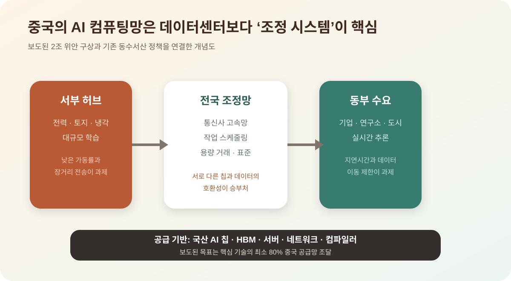

중국, 2조 위안 AI 데이터센터 국가망을 검토한다
중국이 약 2조 위안, 달러 기준 약 2,950억 달러 규모의 전국 AI 컴퓨팅망을 검토하고 있다는 보도가 나왔다. 핵심은 단순히 데이터센터를 많이 짓는 것이 아니라, 중국산 칩과 국산 인프라를 중심으로 AI 계산 능력을 국가 단위로 묶겠다는 전략이다.
Important Caveat
아직 공식 확정 발표가 아니라 보도 기반 사안이다
이번 내용은 Bloomberg 보도를 인용한 주요 기술 매체 보도에 기반한다. 중국 정부가 최종 확정안을 공식 발표한 단계로 단정하면 안 된다. 다만 국가발전개혁위원회, 국영 통신사, 국산 반도체 비중 확대라는 구성은 중국의 기존 AI 자립 전략과 방향이 맞아 주목할 필요가 크다.
무엇을 만들려는가
보도에 따르면 중국은 2028년까지 전국의 데이터센터를 하나의 AI 컴퓨팅 그리드처럼 연결하는 방안을 검토하고 있다. 운영의 중심에는 China Mobile, China Telecom 같은 국영 통신사가 놓일 가능성이 거론된다. 목표는 대형 모델 학습과 추론에 필요한 계산 자원을 지역별로 흩어진 시설이 아니라 국가 인프라처럼 배분하는 것이다.
더 중요한 부분은 국산화 비율이다. TechRadar와 Tom's Hardware는 이 계획이 AI 칩, 서버, 소프트웨어 등 핵심 기술의 최소 80%를 중국 공급망에서 조달하는 방향이라고 전했다. 이는 Nvidia, AMD, Intel 같은 미국 업체 의존도를 줄이고 Huawei, SMIC 등 중국 업체의 역할을 키우려는 움직임과 연결된다.
왜 지금인가
미국의 AI 반도체 수출통제 이후 중국 AI 산업의 가장 큰 병목은 모델 아이디어보다 계산 자원이다. DeepSeek, Alibaba, Zhipu 같은 중국 AI 기업들이 빠르게 모델을 내놓고 있지만, 최첨단 학습용 GPU 확보는 계속 제약을 받는다. 따라서 중국 입장에서는 개별 기업이 각자 GPU를 확보하는 방식보다 국가가 전력, 통신, 데이터센터, 국산 칩 수요를 묶는 방식이 더 현실적인 해법이 된다.
이 구상은 미국의 Stargate류 대형 AI 인프라 투자와도 정면으로 비교된다. 미국은 민간 빅테크와 클라우드 기업 중심으로 AI 데이터센터를 확장하고 있고, 중국은 국가 주도형 통신망과 산업정책을 활용해 대응하려 한다. AI 경쟁이 모델 성능 경쟁에서 전력과 칩, 데이터센터를 둘러싼 산업 인프라 경쟁으로 이동하고 있다는 뜻이다.
새 계획은 ‘동수서산’의 AI 버전으로 읽어야 한다
중국은 2022년부터 동부의 데이터 수요를 전력과 토지가 상대적으로 풍부한 서부 데이터센터에서 처리하는 ‘동수서산’ 사업을 추진해 왔다. 국가데이터국과 국가발전개혁위원회의 기존 문서는 여러 국가 허브를 고속망으로 연결하고 범용·지능·슈퍼컴퓨팅 자원을 함께 조정하는 전국 일체형 컴퓨팅망을 목표로 제시한다.
2026년 국가데이터국도 이 사업을 심화하고 전국 일체형 컴퓨팅망 구축을 가속하겠다고 밝혔다. 따라서 2조 위안 구상은 갑자기 등장한 별도 프로젝트라기보다 기존 데이터센터·통신망 정책을 생성형 AI에 맞춰 더 큰 규모로 확장하는 제안으로 보는 편이 자연스럽다. 다만 예산 총액과 80% 국산화 조건은 아직 보도 단계라는 점을 분리해야 한다.
네트워크의 목적은 센터를 많이 짓는 데서 끝나지 않는다. 사용자가 작업을 제출하면 데이터 위치, 지연시간, 칩 종류, 전력 가격과 가용 용량에 맞춰 다른 지역의 자원을 배정하는 시장과 조정 시스템이 필요하다. 국영 통신사가 중심 후보로 거론되는 이유는 전국망과 데이터센터, 공공 조달을 동시에 연결할 수 있기 때문이다.
학습 작업과 실시간 추론은 같은 장소로 보낼 수 없다
대규모 사전학습은 데이터와 칩을 한곳에 모으고 장시간 돌리는 배치 작업이어서 전력이 싼 서부에 배치하기 쉽다. 반면 검색·금융·산업제어처럼 사용자가 즉시 답을 기다리는 추론은 동부 대도시와 가까워야 지연을 줄일 수 있다. 모든 계산을 서쪽으로 보내는 단순한 구조는 작동하지 않는다.
데이터 이동 비용도 크다. 학습 데이터가 여러 지역에 흩어져 있거나 개인정보·산업 기밀 때문에 이동할 수 없으면 계산 자원을 데이터 쪽으로 가져가야 한다. 서로 다른 제조사의 AI 칩과 소프트웨어 스택을 한 작업 안에서 조정하는 것도 어렵다. 국가망의 성패는 데이터센터 숫자보다 작업 이동성과 소프트웨어 호환성에 달려 있다.
가장 큰 약점은 칩이다
계획이 크다고 해서 바로 성공을 뜻하지는 않는다. Tom's Hardware는 중국 내 첨단 칩 생산능력과 고대역폭 메모리 공급이 병목이 될 수 있다고 짚었다. SMIC의 첨단 공정 생산 여력은 제한적이고, Huawei Ascend 계열 같은 국산 AI 칩도 고성능 학습 환경에서 Nvidia 생태계를 완전히 대체했다고 보기는 어렵다.
그래서 이번 보도의 핵심은 "중국이 미국을 곧바로 따라잡는다"가 아니다. 더 정확한 해석은 "중국이 AI 경쟁을 버티기 위해 계산 자원을 국가 인프라로 재편하려 한다"이다. 국산 칩 공급이 계획을 따라가지 못하면 비용과 일정은 크게 늘어날 수 있다.
80% 국산화는 공급망 목표이자 성능 제약이다
보도대로 서버·칩·소프트웨어의 최소 80%를 중국 공급자로 채운다면 Huawei Ascend, 국산 네트워크 장비, 스토리지와 운영 소프트웨어에 거대한 보장 수요가 생긴다. 대규모 공공 조달은 생태계의 규모를 키우고 개발자가 국산 가속기에 맞춰 소프트웨어를 최적화할 유인을 준다.
그러나 조달 비율만 높인다고 Nvidia 생태계와 같은 생산성이 즉시 생기지는 않는다. 첨단 로직 공정 수율, HBM 용량, 패키징, 고속 연결, 컴파일러와 커널 라이브러리가 함께 맞아야 한다. 칩 한 개의 벤치마크보다 수천·수만 개를 묶었을 때의 안정성과 개발 도구가 실제 학습 시간을 결정한다.
수출통제가 계속되면 중국은 더 많은 중간급 칩을 병렬로 묶고 모델 효율을 높이는 방향으로 대응할 가능성이 크다. 이는 전력과 네트워크를 더 요구할 수 있지만 충분히 큰 내수와 조달이 소프트웨어 개선을 촉진할 수도 있다. 국산화 목표는 기술 격차의 증거인 동시에 그 격차를 줄이기 위한 수요 정책이다.
기존 데이터센터의 낮은 가동률이 더 큰 경고다
중국은 이미 빠른 데이터센터 건설 뒤 일부 지방 시설의 가동률이 낮다는 문제를 겪었다. Reuters를 인용한 기술 매체 보도는 일부 센터가 20~30% 수준의 부하에 머물렀다고 전했다. 위치가 수요와 멀고 칩이 서로 다르며 네트워크와 판매 체계가 부족하면 시설이 있어도 계산을 팔 수 없다는 뜻이다.
전국망은 남는 용량을 다른 지역에 판매해 이 문제를 줄일 수 있지만 동시에 더 많은 건설을 부추겨 과잉을 키울 위험도 있다. 중앙정부의 목표를 맞추기 위해 지방정부가 수요 검증 없이 센터를 짓거나 보조금을 제공하면 오래된 칩과 부채만 남을 수 있다. 신규 용량보다 기존 자원의 실제 판매율과 작업 완료율을 공개해야 한다.
전력은 중국의 강점이지만 공짜는 아니다
서부는 태양광·풍력·수력과 넓은 부지를 활용할 수 있으나 발전소와 데이터센터가 같은 시간에 같은 장소에서 전력을 쓸 수 있어야 한다. 재생에너지 변동을 배터리·송전망·유연한 학습 일정으로 흡수하지 못하면 석탄 발전 의존이 늘 수 있다. 전력망 투자까지 포함한 총비용은 보도된 데이터센터 예산보다 커질 가능성이 있다.
물과 냉각도 지역마다 다르다. 건조한 서부에 대규모 센터를 지으면 냉각 방식과 용수 제한이 중요하고, 동부는 토지와 전력망 비용이 높다. 컴퓨팅망은 단순 지역 이전이 아니라 전력·물·통신·지연을 함께 최적화해야 한다.
| 항목 | 내용 |
|---|---|
| 규모 | 약 2조 위안, 달러 기준 약 2,950억 달러 규모로 보도됐다. |
| 목표 시점 | 2028년까지 전국 AI 컴퓨팅망을 연결하는 구상이 거론됐다. |
| 운영 주체 | China Mobile, China Telecom 등 국영 통신사가 중심 역할을 맡을 가능성이 보도됐다. |
| 핵심 리스크 | 국산 AI 칩, HBM, 첨단 공정 생산능력이 계획을 따라갈 수 있는지가 관건이다. |
한국과 글로벌 공급망에 미칠 영향
국산화 비율이 실제 조달 조건으로 들어가면 Nvidia와 AMD뿐 아니라 한국 메모리·부품 기업에도 기회와 제약이 동시에 생긴다. 중국산 칩에 필요한 HBM과 서버 메모리 수요는 커질 수 있지만, 중국 내 메모리·패키징 자립 정책이 장기적으로 수입 비중을 낮출 수 있다. 구체적인 품목별 규정이 나오기 전에는 수혜와 피해를 단정하기 어렵다.
한국은 중국의 대규모 조달, 미국의 수출통제, 국내 AI 인프라 수요 사이에서 제품별 규정을 정밀하게 관리해야 한다. 단순히 중국 시장이 커진다는 기대보다 어떤 칩과 장비가 허가 대상이고, 현지 합작과 기술 이전 조건이 무엇인지 확인하는 것이 중요하다.
내가 보는 핵심
이 이슈는 중국 AI 뉴스 중에서도 중요하다. 모델 발표보다 더 아래층의 이야기, 즉 누가 AI를 돌릴 전력과 칩과 데이터센터를 장악하느냐의 문제이기 때문이다. 앞으로 AI 패권은 좋은 챗봇을 누가 먼저 내놓느냐만으로 결정되지 않는다. 모델을 지속적으로 학습시키고 서비스할 수 있는 컴퓨팅망을 누가 안정적으로 확보하느냐가 승부처가 된다.
다만 2조 위안과 80% 국산화는 아직 공식 확정안이 아니다. 발표 여부, 중앙·지방·국영기업의 실제 분담, 기존 센터 가동률과 국산 칩 공급을 확인해야 한다. 중국의 강점은 국가 단위 조정 능력이고 약점은 과잉 투자와 칩 생태계의 병목이다. 이번 계획은 두 특성을 동시에 확대할 수 있다.
출처
- TechRadar, China wants to spend nearly $300 billion on a national data center grid
- Tom's Hardware, China drafts $295 billion plan to build national AI data center grid
- Cinco Dias, China prepara un plan de 295.000 millones de dolares
- 중국 국가데이터국: 동수서산 심화와 전국 일체형 컴퓨팅망 정책
- 중국 국가데이터국: 2026년 전국 일체형 컴퓨팅망 추진
- 중국 국무원 영문 사이트: 동수서산 8개 허브 투자 배경
- Tom's Hardware / Reuters: underused data centers and nationwide capacity trading

Comments
댓글